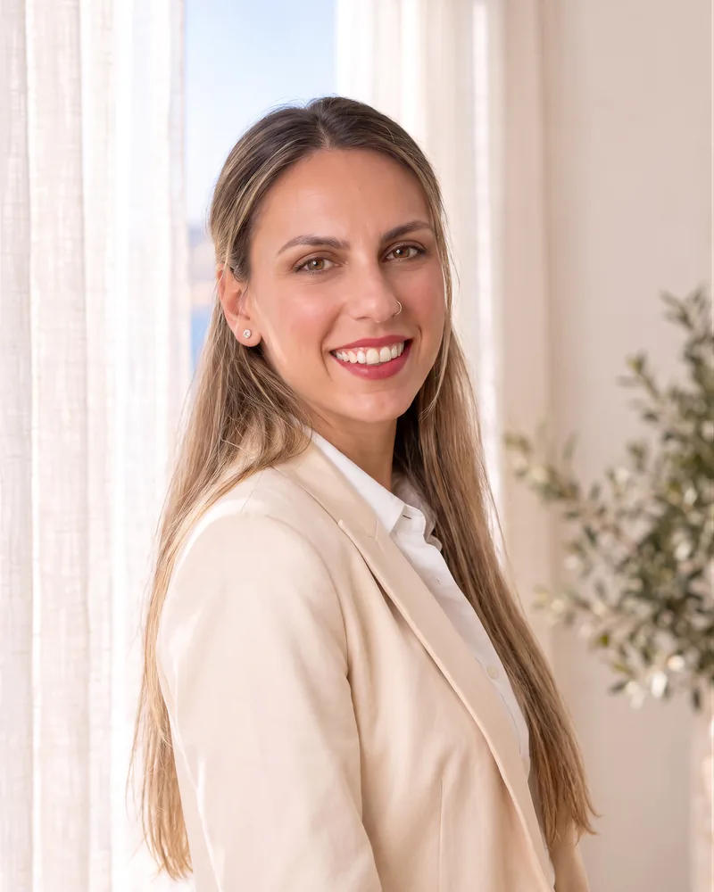

Σχετικά
Ποια είμαι και πώς δουλεύω
Είμαι η Αλεξάνδρα, Διαιτολόγος – Διατροφολόγος. Σπούδασα Επιστήμες Διατροφής και Διαιτολογίας στο Ελληνικό Μεσογειακό Πανεπιστήμιο, στη Σητεία της ανατολικής Κρήτης. Τα χρόνια που ζω εδώ μου έδειξαν τη μαγεία της πραγματικής μεσογειακής διατροφής: απλά φαγητά, που οι άνθρωποι τα τρώνε κάθε μέρα και όχι μόνο όταν «κάνουν δίαιτα».
Τη διατροφή την αγάπησα διαβάζοντας. Όσο περισσότερο μάθαινα, τόσο καταλάβαινα πόσο μεγάλο ρόλο παίζει στην υγεία μας αυτό που τρώμε κάθε μέρα. Αυτό με οδήγησε στην κλινική διατροφή.
Σήμερα είμαι επιστημονική συνεργάτιδα στο ενδοκρινολογικό ιατρείο EndoCare στη Σητεία, όπου γίνονται και τα ραντεβού δια ζώσης. Αν μένετε μακριά, μπορούμε να τα πούμε online.
Ας γνωριστούμε
Πώς θα σας βοηθήσω
Πρώτα καταλαβαίνουμε το γιατί
Πολλοί έρχονται σε μένα αφού έχουν ήδη δοκιμάσει κάτι: μια αυστηρή δίαιτα, ένα πρόγραμμα από το ίντερνετ, ένα συμπλήρωμα που είδαν στα social media. Συνήθως τους έλειπε μια εξήγηση. Γι' αυτό κοιτάμε πρώτα τι δείχνουν οι εξετάσεις σας και τι κάνει το φαγητό στο σώμα σας, και μετά αποφασίζουμε τι αλλάζουμε.
Δεν κόβουμε ομάδες τροφίμων
Βρίσκουμε πώς χωράνε στο πιάτο σας και πώς ταιριάζουν με τις εξετάσεις και την αγωγή σας. Η πιο όμορφη στιγμή στη δουλειά μου είναι όταν κάποιος ξαναβάζει στο τραπέζι ένα φαγητό που είχε «απαγορέψει» και βλέπει ότι δεν χρειάζεται να το φοβάται.
Η ζυγαριά δεν τα λέει όλα
Δείχνει μόνο πόσο μας τραβάει η βαρύτητα, όχι από τι είμαστε φτιαγμένοι. Γι' αυτό κοιτάμε τη σύσταση του σώματος, τις εξετάσεις σας και το πώς νιώθετε.
Φεύγετε με γραπτές οδηγίες
Για κάθε θέμα που συζητάμε έχω γράψει δικά μου φυλλάδια, σε απλά ελληνικά και με φαγητά της ελληνικής κουζίνας. Τα παίρνετε μαζί σας, για να θυμάστε τι είπαμε όταν θα είστε στην κουζίνα ή στο σούπερ μάρκετ.
Σπουδές
- 2026 – σήμεραMSc Human Nutrition (Clinical Nutrition), University of Essex
- 2020BSc Επιστήμες Διατροφής και Διαιτολογίας, Ελληνικό Μεσογειακό Πανεπιστήμιο (ΕΛ.ΜΕ.ΠΑ.), Σητεία Κρήτης. Πτυχιακή εργασία: «Σύγχρονη διατροφική προσέγγιση της αντιγήρανσης».
Εμπειρία
- 07/2026 – σήμεραΣτο ιατρείο EndoCare, Σητεία Κρήτης. Βλέπω ανθρώπους με διαβήτη, ινσουλινοαντίσταση, θυρεοειδή, χοληστερίνη ή νεφρική νόσο, συχνά με περισσότερα από ένα μαζί, και συνεργάζομαι με ενδοκρινολόγο. Ό,τι κι αν σας απασχολεί, θα το ακούσω χωρίς βιασύνη. Μετά διαλέγουμε μαζί: εξατομικευμένο διαιτολόγιο ή διατροφική συμβουλευτική.
- 2023 – σήμεραOnline, από όπου κι αν βρίσκεστε. Από το σπίτι σας, με τις ίδιες δύο επιλογές: εξατομικευμένο διαιτολόγιο ή διατροφική συμβουλευτική.
- 05/2023 – 11/2023Εθελόντρια διαιτολόγος, Διαιτολογικό Τμήμα Γ.Ν.-Κ.Υ. Σητείας. Διατροφική υποστήριξη νοσηλευόμενων και εξωτερικό διαιτολογικό ιατρείο.
Πώς συνεχίζω να μαθαίνω
Η επιστήμη της διατροφής προχωράει γρήγορα, γι' αυτό δεν σταμάτησα στο πτυχίο:
- Πρόγραμμα Κλινικής Διατροφής του ΕΚΠΑ και, σήμερα, μεταπτυχιακό στην Κλινική Διατροφή στο University of Essex.
- Σεμινάρια του 2026 για τη δίαιτα low FODMAP, τη διατροφή σε αγωγή GLP-1 και στη χρόνια νεφρική νόσο, από την Kiwi Biosciences και το Abbott Nutrition Health Institute.
- Συνέδρια διατροφής και κλινικής διατροφής, από τα φοιτητικά μου χρόνια. Κατά την πρακτική μου άσκηση ετοίμασα με δύο συμφοιτητές μου μια μελέτη περίπτωσης, που παρουσιάστηκε σε συνέδριο διατροφής και διαιτολογίας.
- Υποτροφία για το πρόγραμμα AI & Innovation της Founderz σε συνεργασία με τη Microsoft, και το Take the Lead της eCornell (Cornell University). Με αυτά οργανώνω καλύτερα τη δουλειά μου και τα έντυπα που παίρνετε μαζί σας.
Πώς γράφω τα άρθρα
Τα θέματα των άρθρων είναι συνήθως οι ερωτήσεις που ακούω πιο συχνά στο ιατρείο. Κάθε άρθρο βασίζεται σε επιστημονικές μελέτες και σε οδηγίες επιστημονικών εταιρειών, που τις βρίσκετε στο τέλος του κειμένου. Πριν δημοσιευτεί, το διαβάζω, το διορθώνω και ελέγχω τις πηγές του.
Κάθε άρθρο έχει ημερομηνία δημοσίευσης. Προσπαθώ να παρακολουθώ τη νέα βιβλιογραφία και να ενημερώνω τα άρθρα όταν αλλάζουν τα δεδομένα ή οι οδηγίες. Αν δείτε κάτι που σας φαίνεται λάθος ή παλιό, γράψτε μου στο alexbania94@gmail.com.